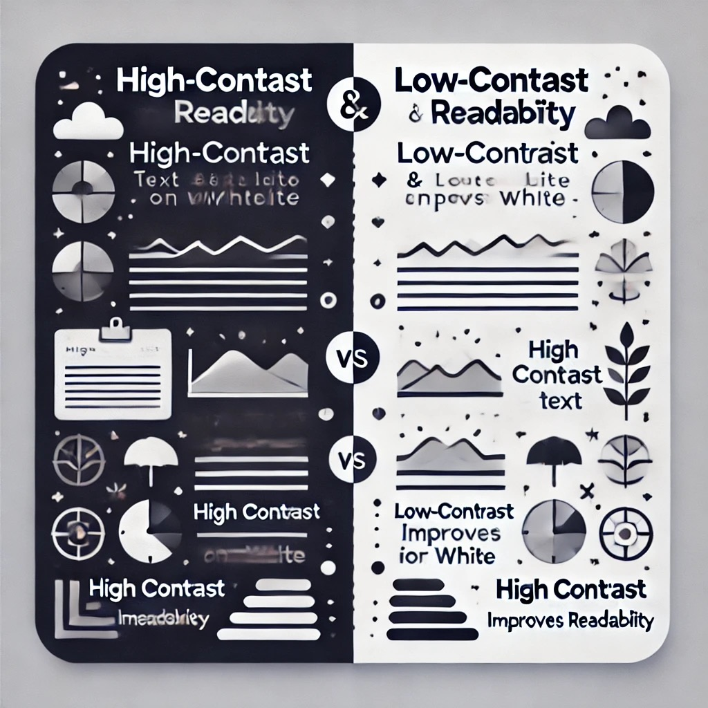
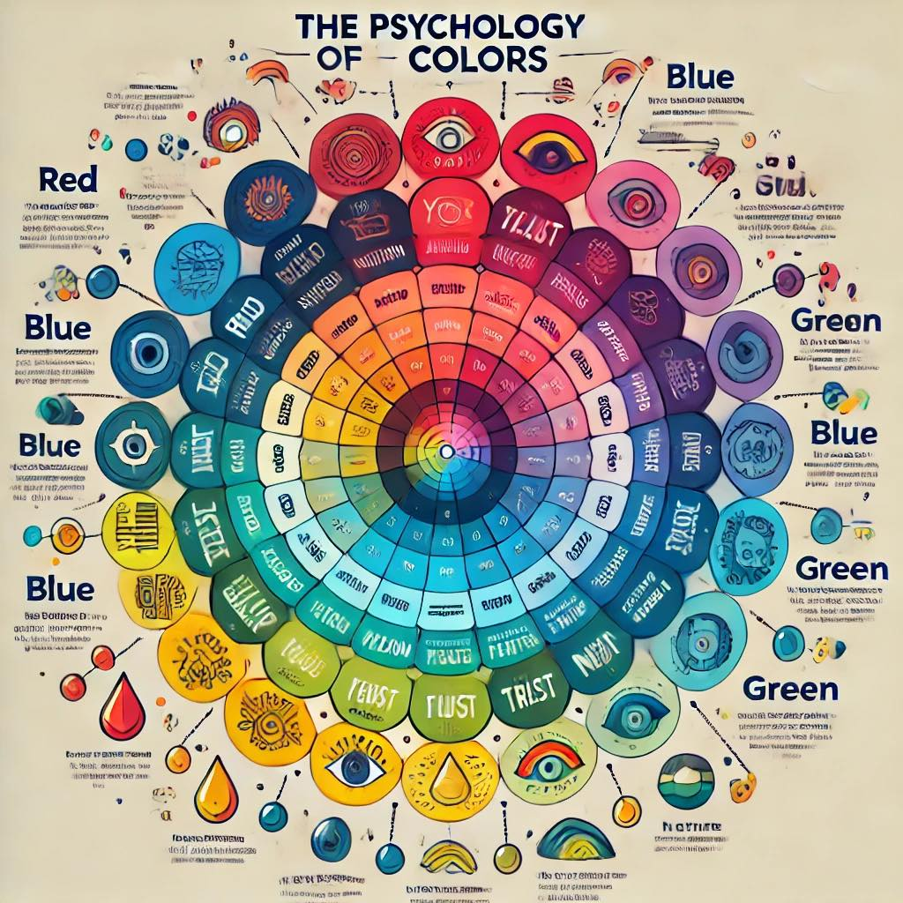
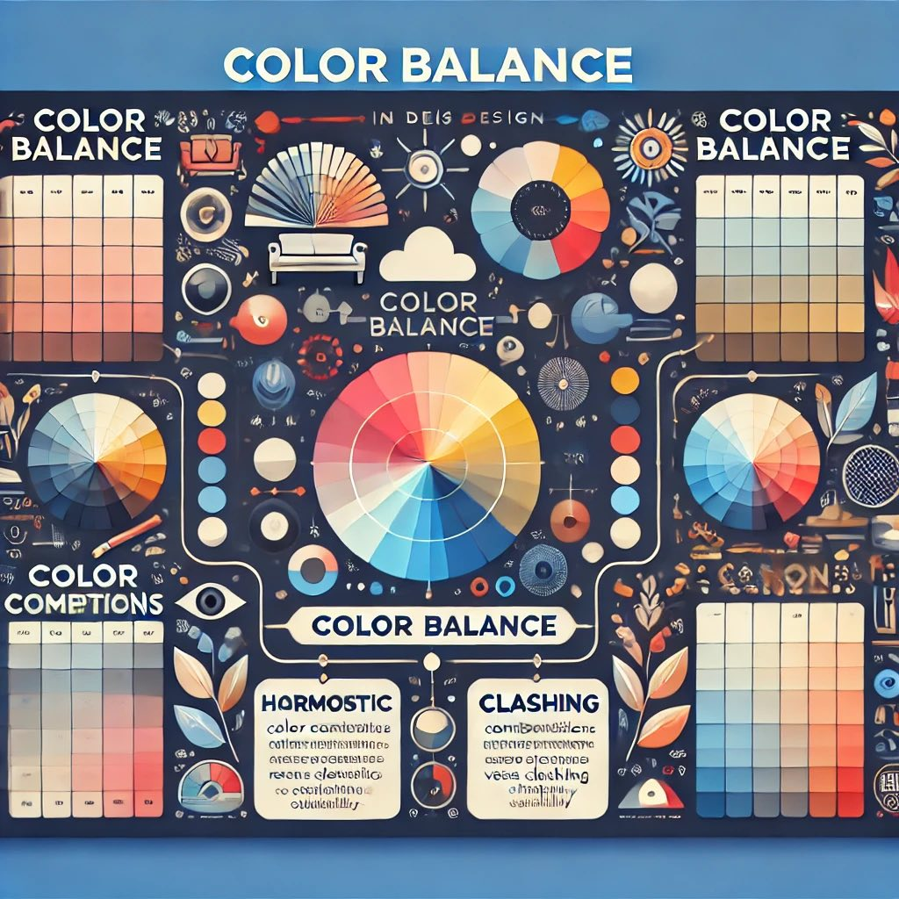
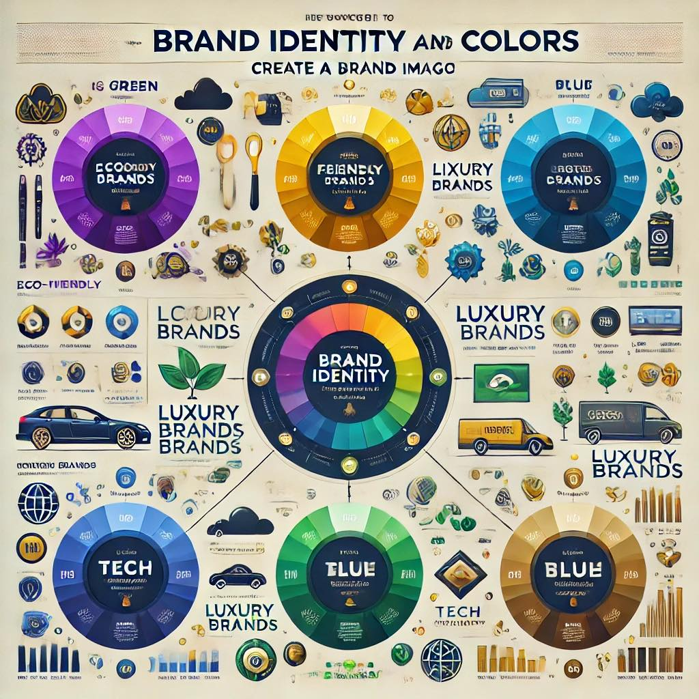

Как цветовете влияят на различните индустрии?
Цветовете играят ключова роля в маркетинга, дизайна и потребителското преживяване. Те предизвикват емоции и влияят върху решението на потребителите. Следните насоки ще ти помогнат да използваш цветовете ефективно.
1. Контраст и четимост
Използвай висок контраст между фона и текста, за да подобриш четимостта. Например, черен текст на бял фон или бял текст на тъмен фон.
2. Психология на цветовете
Разбирай влиянието на цветовете. Например, червеното стимулира апетита (използвано в ресторанти), а синьото създава усещане за доверие (използвано в банки).
3. Баланс на цветовете
Избягвай прекомерното използване на ярки цветове. Създай баланс с неутрални тонове.
4. Бранд идентичност
Използвай цветове, които отразяват идентичността на марката. Например, зелено за екологични компании, лилаво за луксозни продукти.
